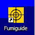
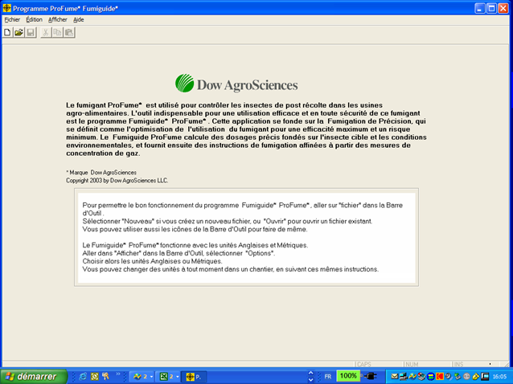
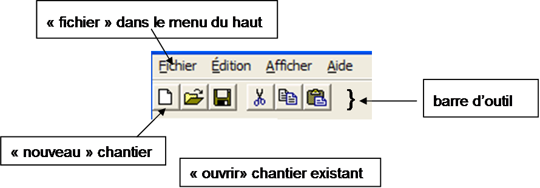
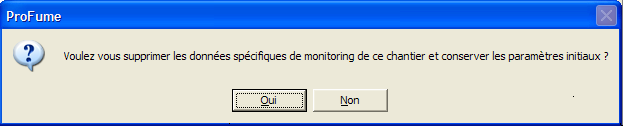
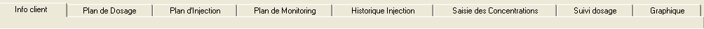
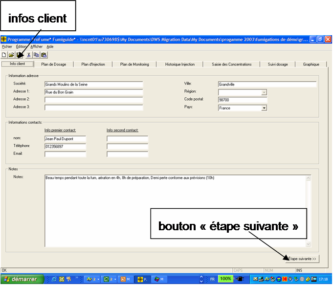
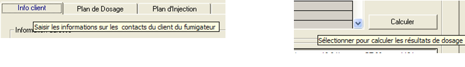
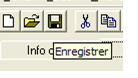
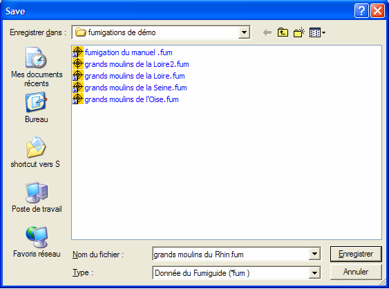

Démarrer le programme et gérer des fichiers
Pour lancer le Fumiguide ProFume, double cliquez sur l'icône ProFume dans le bas de l'affichage de l'ordinateur.

Le programme s'ouvre sur l'écran ci-après.

Menu du haut : Menu situé au sommet de l'application. Les options du menu incluent Fichier, Édition, Affichage et Aide.
Barre d'outils : Groupe de fonctions situé sous le menu du haut : Nouveau, Ouvrir, Enregistrer, Imprimer, Couper, Copier et Coller.

Une fois Le Fumiguide ProFume en action, pointez sur "Fichier" dans le menu du haut ci-dessus. Sélectionnez "Nouveau" pour créer un nouveau chantier ou "Ouvrir" pour ouvrir un chantier existant. Vous pouvez aussi utiliser les icônes de la boîte à outils pour exécuter les mêmes tâches.
Si vous ouvrez un chantier existant, tout fichier enregistré auparavant sera stocké dans le dossier où ils ont été enregistrés (voir ci-dessous). Sélectionnez le fichier dans le dossier en cliquant sur le nom du fichier, par exemple "grands moulins de la Loire 2.fum", et sur le bouton "Ouvrir".

Si vous fumigez la même enceinte une nouvelle fois et si un fichier Fumiguide existe pour cette enceinte, vous pouvez ouvrir ce fichier et changer le nom du fichier pour refléter le chantier courant. Par exemple, si un fichier est nommé "grands moulins de la Loire 2.fum" et si cette enceinte doit être fumigée en 2003, vous pouvez ouvrir ce fichier, mettre à jour les données et enregistrer le nouveau fichier sous le nom "grands moulins de la Loire 2.fum". N'oubliez pas d'utiliser l'opération Enregistrer Sous (F12) dans l'option Fichier du menu du haut. Vous économiserez ainsi le temps de saisie des Info Client et des conditions de fumigation.
Notez la case de message qui s'affiche lors de l'opération Enregistrer Sous [nouveau nom de fichier]. Si vous ne souhaitez pas inclure les mesures de concentrations de concentration ProFume au nouveau fichier, sélectionnez Oui. Pour inclure les mesures de concentrations de concentration ProFume au nouveau fichier, sélectionnez Non.

Le Fumiguide ProFume s'ouvre en affichant l'onglet "Info Client" (voir ci-après). Notez les autres onglets dans le Fumiguide.

Voici une description de ces onglets.
Info Client - Premier onglet du Fumiguide ProFume indiquant l'adresse, les détails de contacts et des notes qui peuvent être stockés pour la fumigation.
Plan de dosage - Stocke l'ensemble des informations et des variables liées au calcul d'une dose et d'un dosage de fumigant.
Plan d'injection - Troisième onglet du Fumiguide ProFume utilisé pour saisir des données d'injection, de ventilateurs et calculer des débits d'injection effectifs et autorisés pour diverses zones d'une enceinte.
Plan de monitoring - Quatrième onglet du Fumiguide ProFume permettant de définir l'emplacement des lignes de monitoring (points de mesure par zone).
Historique injection - Cinquième onglet du Fumiguide ProFume pour enregistrer les quantités de fumigant injectées dans les diverses zones d'une enceinte.
Saisie des concentrations - Sixième onglet pour saisir des mesures de concentrations.
Suivi dosage - Septième onglet du Fumiguide ProFume affichant le temps écoulé, la 1/2 Perte , l'horaire de début & fin de 1/2 Perte, le CT effectif/projeté et situations/recommandations par point de mesure.
Graphique - Huitième onglet du Fumiguide ProFume utilisé pour générer un graphique de la concentration dans le temps pour chaque point de mesure.
Pour passer à l'onglet suivant, cliquez sur le bouton Étape suivante dans le coin inférieur droit de tous les onglets ProFume Fumiguide, Vous pouvez aussi cliquer sur le nom de l'onglet au sommet de l'écran.

"Infobulles"
Lors de l'utilisation de ProFume Fumiguide, vous remarquerez des messages s'affichant lorsque le curseur de la souris passe sur diverses zones de l'écran. Ces messages utiles expliquent ou clarifient la fonction pointée par le curseur. Vous trouverez ci-après deux exemples d'"Infobulles".

Après intervention sur un fichier, enregistrez des informations en cliquant sur l'icône "Enregistrer". NOTE : Nous recommandons vivement d'enregistrer fréquemment pendant la saisie des données.

La fenêtre Enregistrer s'ouvre, saisissez un nom de fichier approprié (date, nom de chantier, ville de fumigation, etc.).

Ouvrir plusieurs copies de Fumiguide simultanément. Le Fumiguide ProFume permet d'ouvrir simultanément plusieurs fichiers du programme avec des chantiers séparés.